Nordsee & Ostsee55 Arten und Funde
Wer fliegt da? Wer taucht da auf?
Seevögel, Robben und Wale an Nord- und Ostsee bestimmen, dazu Quallen, Muscheln und Strandfunde: am Foto und an wenigen sicheren Merkmalen.
 Jetzt zu sehen · NovemberEiderenteIm Winter rasten große Trupps von Eiderenten vor der Küste, an der Ostsee oft zu Tausenden. Foto: Andreas Trepte, CC BY-SA 2.5
Jetzt zu sehen · NovemberEiderenteIm Winter rasten große Trupps von Eiderenten vor der Küste, an der Ostsee oft zu Tausenden. Foto: Andreas Trepte, CC BY-SA 2.5 Seevögel
Seevögel an der Küste
Möwen, Watvögel, Meeresenten und die Felsenbrüter von Helgoland: 16 Arten, die dir an Nord- und Ostsee begegnen.
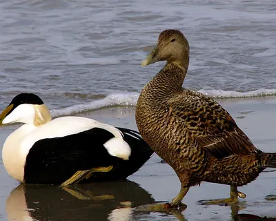
Eiderente50–71 cmFoto: Andreas Trepte, CC BY-SA 2.5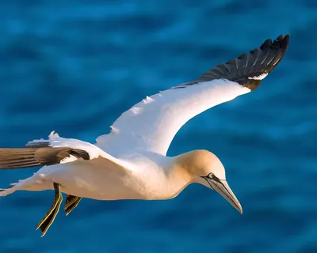
Basstölpel87–100 cm · nur NordseeFoto: Andreas Trepte, CC BY-SA 2.5- Trottellumme38–46 cm · nur NordseeFoto: Gary Bembridge, CC BY 2.0
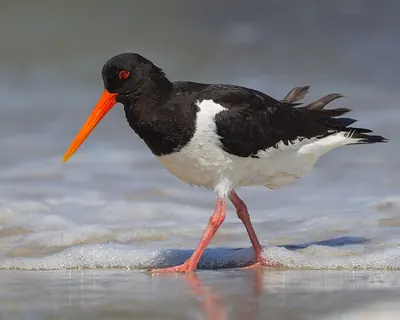
Austernfischer40–45 cmFoto: Andreas Trepte, CC BY-SA 2.5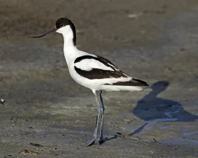
Säbelschnäbler42–45 cmFoto: Andreas Trepte, CC BY-SA 2.5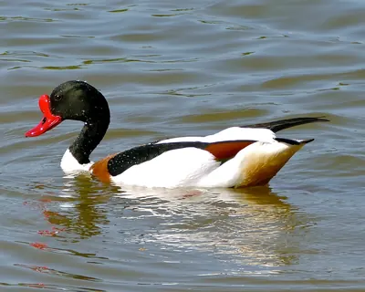
Brandgans55–65 cmFoto: Bernard Dupont, CC BY-SA 2.0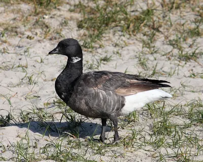
Ringelgans55–62 cmFoto: Andreas Trepte, CC BY-SA 2.5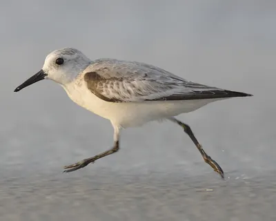
Sanderling18–21 cmFoto: Mdf, CC BY-SA 3.0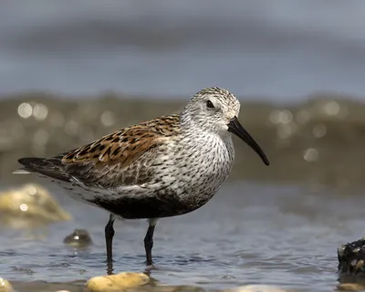
Alpenstrandläufer16–22 cmFoto: Charles Homler (Focus On Wildlife), CC BY-SA 4.0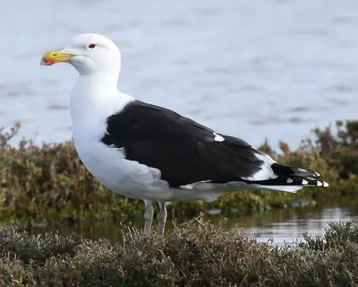
Mantelmöwe64–79 cmFoto: Jean-Pierre Bazard, CC BY-SA 3.0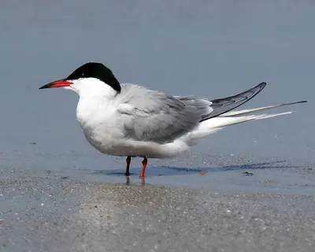
Flussseeschwalbe31–35 cmFoto: Andreas Trepte, CC BY-SA 2.5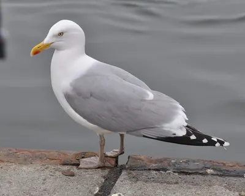
Silbermöwe55–67 cmFoto: Aiwok, CC BY-SA 3.0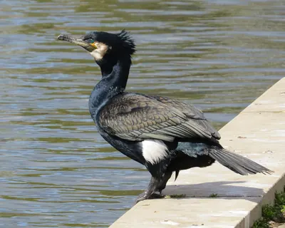
Kormoran80–100 cmFoto: MPF, CC BY-SA 4.0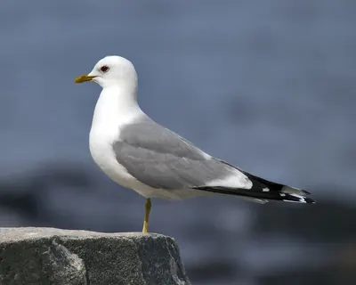
Sturmmöwe40–46 cmFoto: Andreas Trepte, CC BY-SA 2.5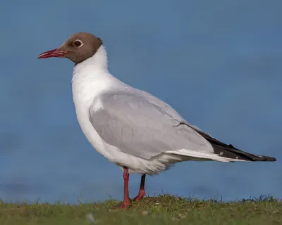
Lachmöwe34–38 cmFoto: Andreas Trepte, CC BY-SA 2.5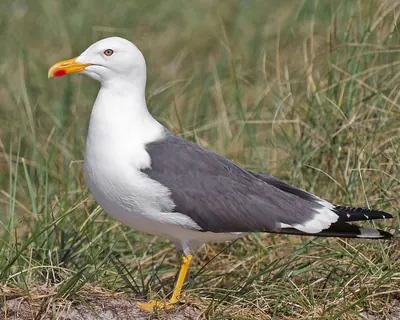
Heringsmöwe52–67 cmFoto: Andreas Trepte, CC BY-SA 2.5
Robben, Wale und Delfine
Robben und Wale an der Küste
Seehunde und Kegelrobben auf den Sandbänken, Schweinswale vor dem Strand und seltene Gäste wie Buckelwal und Pottwal: 8 Arten.
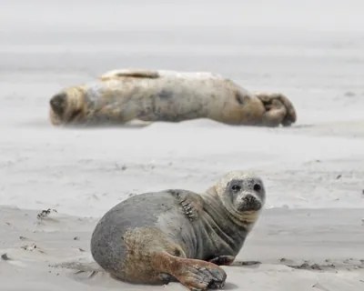
Seehund1,2–1,9 mFoto: Bouke ten Cate, CC BY 4.0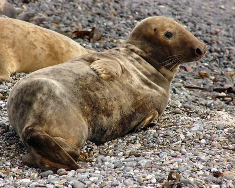
Kegelrobbe1,8–2,5 mFoto: Andreas Trepte, CC BY-SA 2.5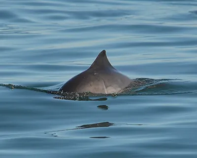
Schweinswal1,4–1,8 mFoto: Ben Phalan, CC BY 4.0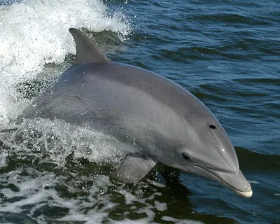
Großer Tümmler2–4 mFoto: NASA, gemeinfrei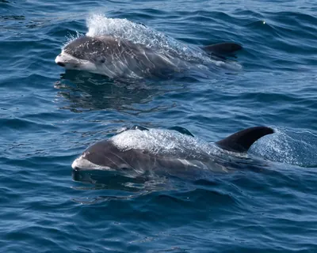
Weißschnauzendelfin2,5–3 m · nur NordseeFoto: Charlotte Kirchner, CC BY 4.0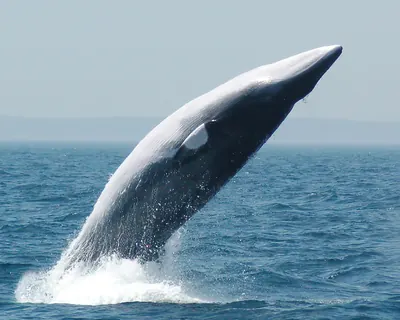
Zwergwal7–9 m · nur NordseeFoto: NOAA National Marine Sanctuaries, gemeinfrei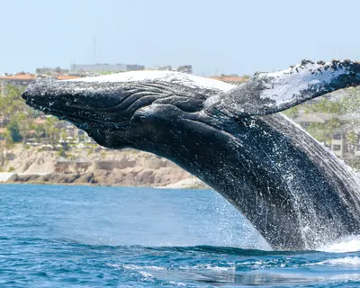
Buckelwal12–15 mFoto: Juan Cruzado Cortés, CC BY 4.0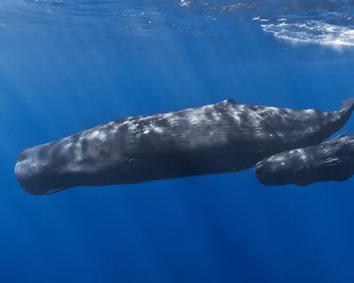
Pottwal12–18 m · nur NordseeFoto: Gabriel Barathieu, CC BY-SA 2.0
Alle Arten und Funde
Nordsee Ostsee
-
 Foto: Charles Homler (Focus On Wildlife), CC BY-SA 4.0 NordseeOstsee
Foto: Charles Homler (Focus On Wildlife), CC BY-SA 4.0 NordseeOstseeAlpenstrandläufer
SeevögelDer häufigste Watvogel im Wattenmeer, mit leicht gebogenem Schnabel. Im Sommer trägt er einen schwarzen Bauchfleck.
-
 Foto: Jakob Tougaard, CC BY 4.0 Nordsee
Foto: Jakob Tougaard, CC BY 4.0 NordseeAmerikanische Schwertmuschel
MuschelnLange, schmale Muschel, die aussieht wie ein altes Rasiermesser.
-
 Foto: Andreas Trepte, CC BY-SA 2.5 NordseeOstsee
Foto: Andreas Trepte, CC BY-SA 2.5 NordseeOstseeAusternfischer
SeevögelSchwarz-weißer Watvogel mit leuchtend orangerotem Schnabel und lautem, schrillem Ruf.
-
 Foto: Michel Langeveld, CC BY-SA 4.0 NordseeOstsee
Foto: Michel Langeveld, CC BY-SA 4.0 NordseeOstsee -
 Foto: Andreas Trepte, CC BY-SA 2.5 Nordsee
Foto: Andreas Trepte, CC BY-SA 2.5 NordseeBasstölpel
SeevögelGroßer weißer Seevogel mit schwarzen Flügelspitzen und gelblichem Kopf, der sich wie ein Pfeil ins Meer stürzt.
-
 Foto: W.carter, CC BY-SA 4.0 NordseeOstsee
Foto: W.carter, CC BY-SA 4.0 NordseeOstseeBernstein
StrandfundeGoldgelbes bis braunes, sehr leichtes Harz aus Wäldern, die vor rund 40 Millionen Jahren wuchsen.
-
 Foto: JackyM59, CC BY-SA 4.0 NordseeOstsee
Foto: JackyM59, CC BY-SA 4.0 NordseeOstsee -
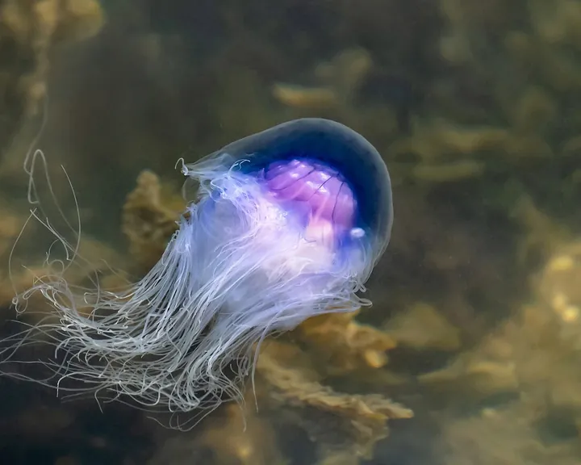
Foto: W.carter, CC BY-SA 4.0NordseeBlaue Nesselqualle
QuallenBläuliche bis violette Qualle mit einem Vorhang aus feinen Tentakeln, die kleine Verwandte der Feuerqualle.
-
 Foto: Bernard Dupont, CC BY-SA 2.0 NordseeOstsee
Foto: Bernard Dupont, CC BY-SA 2.0 NordseeOstseeBrandgans
SeevögelBunte Halbgans: weiß mit rostbraunem Brustband, dunkelgrünem Kopf und leuchtend rotem Schnabel.
-
 Foto: Juan Cruzado Cortés, CC BY 4.0 NordseeOstsee
Foto: Juan Cruzado Cortés, CC BY 4.0 NordseeOstseeBuckelwal
Wale & DelfineGroßer Bartenwal mit sehr langen, weißen Brustflossen, der beim Abtauchen oft die Schwanzflosse zeigt.
-
 Foto: Rhetos, CC0 NordseeOstsee
Foto: Rhetos, CC0 NordseeOstseeDonnerkeil (Belemnit)
StrandfundeSpitze, patronenförmige Versteinerung aus der Urzeit, der Rest eines ausgestorbenen Tintenfischs.
- Foto: Andreas Trepte, CC BY-SA 2.5 NordseeOstsee
Eiderente
SeevögelGroße, schwere Meeresente. Das Männchen ist schwarz-weiß mit grünem Nacken, das Weibchen braun gebändert.
-
 Foto: Hans Hillewaert, CC BY-SA 4.0 Nordsee
Foto: Hans Hillewaert, CC BY-SA 4.0 NordseeEinsiedlerkrebs
Krebse & WürmerKrebs mit weichem Hinterleib, der in einem leeren Schneckenhaus wohnt und es mit sich herumträgt.
-
 Foto: Arnstein Rønning, CC BY 3.0 NordseeOstsee
Foto: Arnstein Rønning, CC BY 3.0 NordseeOstseeFeuerqualle
QuallenGroße, gelbrote Qualle mit einem dichten Vorhang aus langen, feinen Tentakeln. Auch Gelbe Haarqualle genannt.
-
 Foto: Andreas Trepte, CC BY-SA 2.5 NordseeOstsee
Foto: Andreas Trepte, CC BY-SA 2.5 NordseeOstseeFlussseeschwalbe
SeevögelSchlanker, weißer Seevogel mit schwarzer Kappe, rotem Schnabel und tief gegabeltem Schwanz.
-
 Foto: H. Zell, CC BY-SA 3.0 NordseeOstsee
Foto: H. Zell, CC BY-SA 3.0 NordseeOstseeGemeine Strandschnecke
SchneckenKleine, kegelförmige Schnecke mit dunkler, fein gestreifter Schale.
-
 Foto: Michel Langeveld, CC BY-SA 4.0 NordseeOstsee
Foto: Michel Langeveld, CC BY-SA 4.0 NordseeOstseeGemeiner Seestern
Seesterne & SeeigelOrange bis rotbrauner Seestern mit fünf Armen und vielen kleinen Füßchen auf der Unterseite.
-
 Foto: Evie Fachon, CC BY 4.0 NordseeOstsee
Foto: Evie Fachon, CC BY 4.0 NordseeOstseeGewöhnliches Seegras
Tang & SeegrasGrasähnliche Meerespflanze mit langen, schmalen Blättern, die im Flachwasser Wiesen bildet.
-
 Foto: NASA, gemeinfrei NordseeOstsee
Foto: NASA, gemeinfrei NordseeOstseeGroßer Tümmler
Wale & DelfineDer bekannte „Flipper“-Delfin: grau und kräftig, mit kurzer, deutlich abgesetzter Schnauze.
-
 Foto: Andreas Trepte, CC BY-SA 2.5 NordseeOstsee
Foto: Andreas Trepte, CC BY-SA 2.5 NordseeOstseeHeringsmöwe
SeevögelSo groß wie die Silbermöwe, aber mit schiefergrauem Rücken und leuchtend gelben Beinen.
-
 Foto: Auckland Museum, CC BY 4.0 Nordsee
Foto: Auckland Museum, CC BY 4.0 NordseeHerzigel
Seesterne & SeeigelSeeigel mit herzförmigem, sehr dünnem Gehäuse. Am Strand findest du meist nur die weiße Schale ohne Stacheln.
-
 Foto: H. Zell, CC BY-SA 3.0 NordseeOstsee
Foto: H. Zell, CC BY-SA 3.0 NordseeOstseeHerzmuschel
MuschelnRundliche, gerippte Muschel. Zwei Hälften zusammen sehen von der Seite aus wie ein Herz.
-
 Foto: Ansgar Koreng, CC BY-SA 3.0 de NordseeOstsee
Foto: Ansgar Koreng, CC BY-SA 3.0 de NordseeOstseeHühnergott
StrandfundeEin Feuerstein mit einem natürlichen Loch. Er gilt an der Küste als Glücksbringer.
-
 Foto: maribang, CC BY 4.0 Nordsee
Foto: maribang, CC BY 4.0 NordseeKatzenhai-Ei
StrandfundeGelbbraune, durchscheinende Eikapsel mit langen, gekringelten Ranken an den Ecken. Die Eihülle des Kleingefleckten Katzenhais.
-
 Foto: Andreas Trepte, CC BY-SA 2.5 NordseeOstsee
Foto: Andreas Trepte, CC BY-SA 2.5 NordseeOstseeKegelrobbe
RobbenGrößtes Raubtier Deutschlands, mit langer, gerader Schnauze und weißen Jungen im Winter.
-
 Foto: JackyM59, CC BY-SA 4.0 Nordsee
Foto: JackyM59, CC BY-SA 4.0 NordseeKompassqualle
QuallenQualle mit braunen, V-förmigen Streifen auf dem Schirm, die wie eine Kompassrose aussehen.
-
 Foto: MPF, CC BY-SA 4.0 NordseeOstsee
Foto: MPF, CC BY-SA 4.0 NordseeOstseeKormoran
SeevögelGroßer, dunkler Wasservogel, der oft mit ausgebreiteten Flügeln auf Buhnen und Pfählen sitzt.
-
 Foto: Andreas Trepte, CC BY-SA 2.5 NordseeOstsee
Foto: Andreas Trepte, CC BY-SA 2.5 NordseeOstseeLachmöwe
SeevögelKleine, wendige Möwe mit dunkelrotem Schnabel. Im Sommer trägt sie eine schokoladenbraune Kappe.
-
 Foto: Strobilomyces, CC BY-SA 3.0 Nordsee
Foto: Strobilomyces, CC BY-SA 3.0 NordseeLungenqualle
QuallenSehr große, feste Qualle mit bläulichem Rand und dicken, krausen Mundarmen statt Tentakeln.
-
 Foto: Jean-Pierre Bazard, CC BY-SA 3.0 NordseeOstsee
Foto: Jean-Pierre Bazard, CC BY-SA 3.0 NordseeOstsee -
 Foto: Holger Krisp, CC BY 3.0 NordseeOstsee
Foto: Holger Krisp, CC BY 3.0 NordseeOstsee -
 Foto: James St. John, CC BY 2.0 NordseeOstsee
Foto: James St. John, CC BY 2.0 NordseeOstseeMiesmuschel
MuschelnLängliche, blauschwarze Muschel, die in dichten Bänken an Steinen, Buhnen und im Watt sitzt.
-
 Foto: Jbee flower, CC BY-SA 4.0 Nordsee
Foto: Jbee flower, CC BY-SA 4.0 NordseeNixentäschchen (Rochen-Ei)
StrandfundeSchwarze, rechteckige Eikapsel mit vier Hörnchen. Darin ist ein junger Rochen herangewachsen.
-
 Foto: Hans Hillewaert, CC BY-SA 4.0 NordseeOstsee
Foto: Hans Hillewaert, CC BY-SA 4.0 NordseeOstseeNordseegarnele
Krebse & WürmerKleine, sandfarbene Garnele, die sich blitzschnell im Sand eingräbt. Auf dem Teller heißt sie Krabbe.
-
 Foto: Joymaster, Gemeinfrei NordseeOstsee
Foto: Joymaster, Gemeinfrei NordseeOstseeOhrenqualle
QuallenDurchsichtige, flache Qualle mit vier ringförmigen Organen in der Mitte, die wie Ohren aussehen.
-
 Foto: H. Zell, CC BY-SA 3.0 Nordsee
Foto: H. Zell, CC BY-SA 3.0 NordseePantoffelschnecke
SchneckenFlache Schnecke, die innen ein kleines Querbrett hat und dadurch aussieht wie ein Pantoffel.
-
 Foto: David Monniaux, CC BY-SA 3.0 Nordsee
Foto: David Monniaux, CC BY-SA 3.0 NordseePazifische Auster
MuschelnGroße, unregelmäßig geformte Muschel mit blättrig-schuppiger, grauer Schale.
-
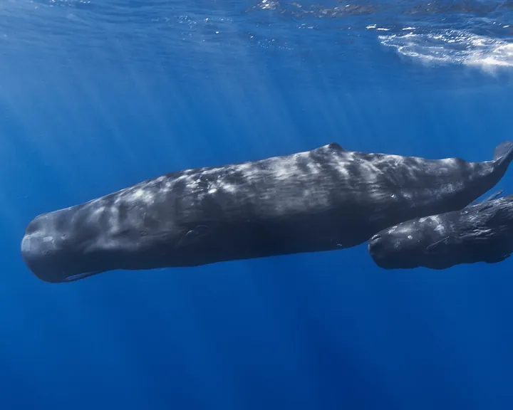
Foto: Gabriel Barathieu, CC BY-SA 2.0NordseePottwal
Wale & DelfineRiesiger Zahnwal mit kastenförmigem Kopf, der in der flachen Nordsee nur als Irrgast auftaucht.
-
 Foto: Andreas Trepte, CC BY-SA 2.5 NordseeOstsee
Foto: Andreas Trepte, CC BY-SA 2.5 NordseeOstseeRingelgans
SeevögelKleine, dunkle Meeresgans mit schwarzem Kopf und Hals und einem schmalen weißen Halsring.
-
 Foto: Andreas Trepte, CC BY-SA 2.5 NordseeOstsee
Foto: Andreas Trepte, CC BY-SA 2.5 NordseeOstsee -
 Foto: Mdf, CC BY-SA 3.0 NordseeOstsee
Foto: Mdf, CC BY-SA 3.0 NordseeOstseeSanderling
SeevögelKleiner, heller Strandläufer, der wie ein Uhrwerk vor den auslaufenden Wellen hin und her rennt.
-
 Foto: Michel Langeveld, CC BY-SA 4.0 NordseeOstsee
Foto: Michel Langeveld, CC BY-SA 4.0 NordseeOstseeSandklaffmuschel
MuschelnGroße, ovale, kreideweiße Muschel, deren Hälften hinten nicht ganz schließen.
-
 Foto: Ben Phalan, CC BY 4.0 NordseeOstsee
Foto: Ben Phalan, CC BY 4.0 NordseeOstseeSchweinswal
Wale & DelfineDer einzige heimische Wal. Klein, scheu und mit dreieckiger Rückenflosse.
-
 Foto: Bouke ten Cate, CC BY 4.0 NordseeOstsee
Foto: Bouke ten Cate, CC BY 4.0 NordseeOstseeSeehund
RobbenHäufigste Robbe an der Nordsee mit rundem Kopf, kurzer Schnauze und großen dunklen Augen.
-
 Foto: Bobjgalindo, CC BY-SA 4.0 NordseeOstsee
Foto: Bobjgalindo, CC BY-SA 4.0 NordseeOstseeSeepocke
Krebse & WürmerKleiner weißer Kegel aus Kalkplatten auf Steinen und Muscheln. Darin wohnt ein Krebs, der auf dem Kopf steht.
-
 Foto: Bj.schoenmakers, CC0 NordseeOstsee
Foto: Bj.schoenmakers, CC0 NordseeOstseeSeestachelbeere
QuallenKleine, glasklare Kugel mit acht Rippen. Eine Rippenqualle, keine echte Qualle, und sie brennt nicht.
-
 Foto: Gary Houston, CC0 Nordsee
Foto: Gary Houston, CC0 NordseeSepiaschale
StrandfundeWeiße, ovale und sehr leichte Platte. Es ist die innere Schale eines Tintenfischs, des Gemeinen Tintenfischs.
-
 Foto: Aiwok, CC BY-SA 3.0 NordseeOstsee
Foto: Aiwok, CC BY-SA 3.0 NordseeOstseeSilbermöwe
SeevögelDie typische große Möwe an Nord- und Ostsee: hellgrauer Rücken und gelber Schnabel mit rotem Fleck.
-
 Foto: Lycaon, CC BY-SA 3.0 NordseeOstsee
Foto: Lycaon, CC BY-SA 3.0 NordseeOstseeStrandkrabbe
Krebse & WürmerHäufigste Krabbe an unseren Küsten, grünlich bis braun, mit fünf Zacken an jeder Panzerseite.
-
 Foto: Andreas Trepte, CC BY-SA 2.5 NordseeOstsee
Foto: Andreas Trepte, CC BY-SA 2.5 NordseeOstseeSturmmöwe
SeevögelMittelgroße Möwe mit freundlichem Gesicht: dünner, grüngelber Schnabel ohne roten Fleck und dunkles Auge.
-
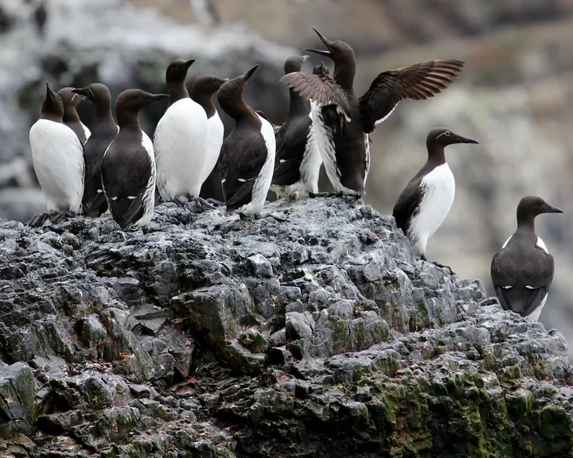
Foto: Gary Bembridge, CC BY 2.0NordseeTrottellumme
SeevögelSchwarz-weißer Seevogel, der aussieht wie ein kleiner Pinguin und dicht gedrängt auf schmalen Felsbändern brütet.
-
 Foto: W.carter, Gemeinfrei NordseeOstsee
Foto: W.carter, Gemeinfrei NordseeOstseeWattwurm
Krebse & WürmerGroßer Wurm, der in einer U-förmigen Röhre im Watt lebt. Bekannt sind seine geringelten Sandhaufen.
-
 Foto: Charlotte Kirchner, CC BY 4.0 Nordsee
Foto: Charlotte Kirchner, CC BY 4.0 NordseeWeißschnauzendelfin
Wale & DelfineKräftiger Delfin mit kurzer, heller Schnauze und großen weißen und grauen Flecken an den Flanken.
-
 Foto: Michel Langeveld, CC BY-SA 4.0 Nordsee
Foto: Michel Langeveld, CC BY-SA 4.0 NordseeWellhornschnecke
SchneckenGroße Meeresschnecke mit welligen Rippen. Ihre Laichballen sehen aus wie ein gelber Schaumstoffklumpen.
-
 Foto: NOAA National Marine Sanctuaries, gemeinfrei Nordsee
Foto: NOAA National Marine Sanctuaries, gemeinfrei NordseeZwergwal
Wale & DelfineDer kleinste Bartenwal der Nordsee: schlank, mit spitzem Kopf und einem weißen Band auf den Brustflossen.
Nichts passt zu deiner Suche oder Auswahl.
Nordsee oder Ostsee?
Die beiden Meere sind sehr verschieden. Das merkst du daran, welche Vögel, Robben und Wale dort leben und was am Strand liegt.
- NordseeSalziges Gezeitenmeer mit dem Wattenmeer, einem der wichtigsten Rastgebiete für Zugvögel weltweit.
- Ebbe und Flut, 2 bis 4 Meter Unterschied
- Wattenmeer, Halligen und Sandbänke
- Seehunde, Basstölpel und Trottellummen
- OstseeEin fast geschlossenes Binnenmeer mit Bodden, Förden und Steilküsten. Im Winter rasten hier riesige Entenschwärme.
- Kaum Gezeiten, der Wind bestimmt den Wasserstand
- Viel weniger Salz als die Nordsee
- Bernstein, Feuersteine und Steilküsten
Gut ausgerüstet an die Küste
Alle Empfehlungen ansehen- Beispielfoto · Foto: Jacek Halicki, CC BY-SA 4.0

Celestron Nature DX 8x42
Celestron
Für Seevögel im Watt und Robben auf der Sandbank, aus sicherem Abstand. 8-fache Vergrößerung, wasserdicht und leicht.
Bei Amazon ansehen Celestron Nature DX 8x42 (Werbelink, öffnet in neuem Fenster) - Beispielfoto · Foto: USFWS Mountain-Prairie, gemeinfrei
 Unser Tipp
Unser TippVogelführer für Küste und Meer
Auswahl bei Amazon
Möwen, Watvögel und Seeschwalben ähneln sich oft. Ein Vogelführer mit Bildern der Jugend- und Winterkleider hilft beim Bestimmen.
Bei Amazon ansehen Vogelführer für Küste und Meer (Werbelink, öffnet in neuem Fenster) - Beispielfoto · Foto: Amber Bugs, CC BY-SA 4.0
 Unser Tipp
Unser TippUV-Taschenlampe 365 nm
Auswahl bei Amazon
Bernstein leuchtet unter UV-Licht bläulich bis gelb und fällt so im Tangsaum sofort auf. Nicht in die Augen leuchten.
Bei Amazon ansehen UV-Taschenlampe 365 nm (Werbelink, öffnet in neuem Fenster) - Beispielfoto · Foto: R. Tucker Abbott, American Seashells (1954), gemeinfrei
 Unser Tipp
Unser TippBestimmungsbuch Strand und Küste
Auswahl bei Amazon
Ein handliches Bestimmungsbuch für Muscheln, Schnecken, Quallen und Strandfunde an Nord- und Ostsee passt in jede Strandtasche.
Bei Amazon ansehen Bestimmungsbuch Strand und Küste (Werbelink, öffnet in neuem Fenster)
Werbelink: Wenn du über diesen Link etwas kaufst, erhält der Meereskompass eine kleine Provision von Amazon. Für dich ändert sich am Preis nichts. Als Amazon-Partner verdiene ich an qualifizierten Verkäufen.